Chapter 17 from the published data files
After Saqr, M. — Temporal network analysis: Introduction, methods and analysis with R
Source:vignettes/articles/ch17-published-data.Rmd
ch17-published-data.RmdWhat this is
Chapter 17 of Learning Analytics Methods and Tutorials
builds a temporal network from a MOOC discussion forum using
networkDynamic, tsna and ndtv.
This is the same analysis in Dynet.
vignette("ch17-temporal-networks") is the version that
ships with the package. This one is a pkgdown article
rather than a vignette, and it differs in two ways that are the reason
it is kept: it downloads the two published CSV files at render time
instead of reading the bundled mooc_posts and
mooc_people, and it does its data preparation with
dplyr, rio and janitor — the way
a reader following the chapter would write it — rather than in base R.
Both make it unshippable and neither changes a number.
It is not a line-by-line transcription. Two things in the chapter’s code are defects, and reproducing them would mean writing worse code to get worse numbers; both are named and measured in what differs.
# Prefer the working tree, fall back to the installed package, so the article
# builds whether or not it is rendered from inside the repository.
package_root <- normalizePath(file.path(dirname(knitr::current_input(dir = TRUE)),
"../.."), mustWork = FALSE)
if (dir.exists(package_root) && requireNamespace("devtools", quietly = TRUE)) {
devtools::load_all(package_root, quiet = TRUE)
} else {
library(Dynet)
}
library(dplyr)
library(rio)1. Data
net_edges <- import("https://raw.githubusercontent.com/lamethods/data/main/6_snaMOOC/DLT1%20Edgelist.csv") |>
janitor::clean_names()
net_nodes <- import("https://raw.githubusercontent.com/lamethods/data/main/6_snaMOOC/DLT1%20Nodes.csv")Recode expertise and name the vertex key.
net_nodes <- net_nodes |>
rename(name = UID) |>
mutate(name = as.character(name),
expert_level = case_match(experience,
1 ~ "Expert", 2 ~ "Student", 3 ~ "Teacher"))Drop self-loops and keep only discussions that had an exchange.
Timestamps stay as they are: dynet() converts them.
posts <- net_edges |>
filter(sender != receiver) |>
mutate(sender = as.character(sender), receiver = as.character(receiver)) |>
group_by(discussion_title) |>
filter(n() > 1) |>
ungroup()
nrow(posts)
#> [1] 2406
n_distinct(posts$discussion_title)
#> [1] 2992. The temporal network
Forum data is threaded: a tie is live from its own post until the
thread falls silent (Saqr & Nouri, 2020). Naming thread
selects that.
dn_full <- dynet(posts, from = "sender", to = "receiver", time = "timestamp",
thread = "discussion_title", nodes = net_nodes,
time_unit = "days", directed = TRUE, loops = FALSE)
summary(dn_full)
#> property
#> 1 format
#> 2 directed
#> 3 vertices
#> 4 edge spells
#> 5 distinct pairs
#> 6 time unit
#> 7 observed from
#> 8 observed to
#> 9 span
#> 10 bin width
#> 11 time bins
#> 12 mean snapshot density
#> 13 temporal density
#> 14 sessions
#> 15 vertex attributes
#> value
#> 1 threaded
#> 2 yes
#> 3 441
#> 4 2406
#> 5 1907
#> 6 days
#> 7 0
#> 8 72.01111
#> 9 72.01111
#> 10 1
#> 11 73
#> 12 0.0035
#> 13 not computed
#> 14 none
#> 15 Facilitator, role1, experience, experience2, grades, location, region, country, group, gender, expert, connect, expert_level3. The active subnetwork
The chapter keeps vertices with more than 20 ties.
dn <- induce_subgraph(dn_full, degree > 20)
dn
#> # Temporal network (threaded format, directed) | a cograph netobject
#> # 45 vertices | 686 edge spells | 428 distinct pairs
#> # observed from 0.1138889 to 72.01111 days, binned every 1
#> # vertex attributes: Facilitator, role1, experience, experience2, grades, location, region, country, group, gender, expert, connect, expert_level
#>
#> from to start end duration weight
#> 219 444 0.1138889 69.47778 69.36389 1
#> 310 444 0.1680556 68.38681 68.21875 1
#> 19 310 0.2784722 14.10486 13.82639 1
#> 19 444 0.2909722 69.47778 69.18681 1
#> 30 444 0.8791667 69.47778 68.59861 1
#> 30 444 0.8819444 68.38681 67.50486 1
#> thread
#> Most important change for your school or district?
#> Submitting Questions for the Expert Panel
#> How important is teacher training in a digital learning transition phase?
#> Most important change for your school or district?
#> Most important change for your school or district?
#> Submitting Questions for the Expert Panel
#> discussion_category parent_category category_text
#> Group M Units 1-3 Discussion Groups
#> Unit 1 Expert Panel Unit 1-3 Expert Panel Discussions
#> Group A-C Units 1-3 Discussion Groups
#> Group M Units 1-3 Discussion Groups
#> Group N Units 1-3 Discussion Groups
#> Unit 1 Expert Panel Unit 1-3 Expert Panel Discussions
#> discussion_identifier
#> Most important change for your school or district?Group MUnits 1-3 Discussion Groups
#> Submitting Questions for the Expert PanelUnit 1 Expert PanelUnit 1-3 Expert Panel Discussions
#> How important is teacher training in a digital learning transition phase?Group A-CUnits 1-3 Discussion Groups
#> Most important change for your school or district?Group MUnits 1-3 Discussion Groups
#> Most important change for your school or district?Group NUnits 1-3 Discussion Groups
#> Submitting Questions for the Expert PanelUnit 1 Expert PanelUnit 1-3 Expert Panel Discussions
#> comment_id discussion_id
#> 7 6
#> 13 8
#> 16 9
#> 18 6
#> 32 2
#> 33 8
#> # 680 more spells. summary() describes the network; plot() draws it.4. Visualisation
plot(dn, type = "network")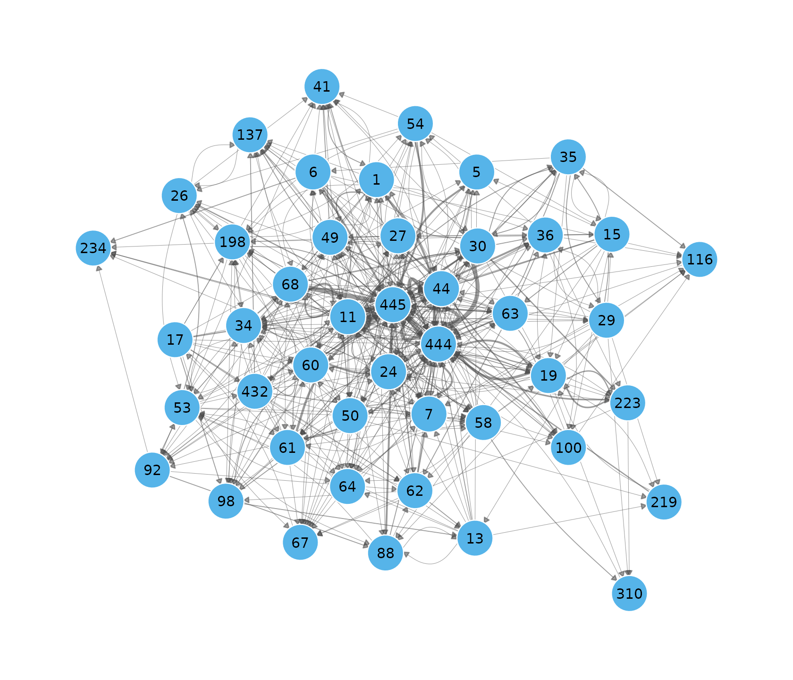
Weeks 1 to 4 — the chapter’s four network.extract()
panels.
plot(dn, type = "snapshots", panels = 4)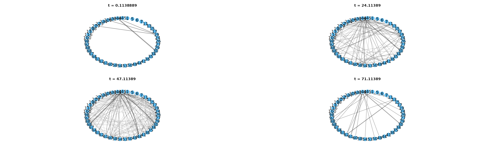
What those panels hold:
weekly <- snapshots(dn, start = 1, end = 22, step = 7, window = 7)
summary(weekly)
#> time ties nodes weight
#> 1 1 58 29 75
#> 2 8 95 38 128
#> 3 15 137 41 193
#> 4 22 154 44 210Activity over time.
plot(dn, type = "timeline", top = 25)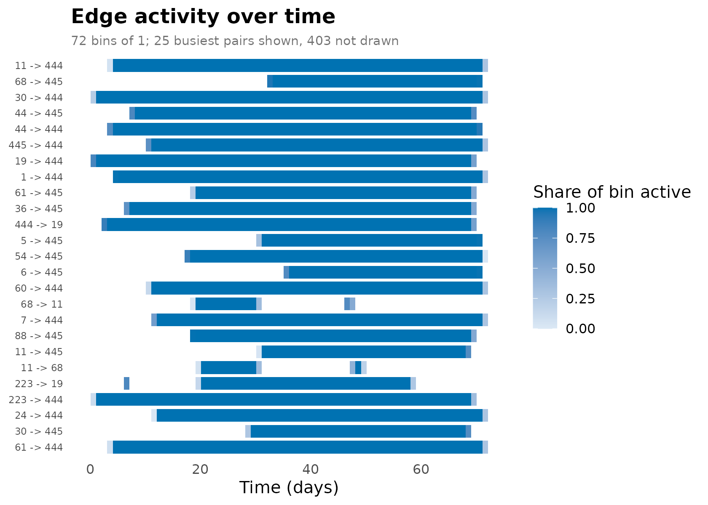
Tie formation and dissolution.
turnover <- events(dn, measure = c("formation", "dissolution"),
start = 0, end = 72, step = 1, window = 1)
plot(turnover)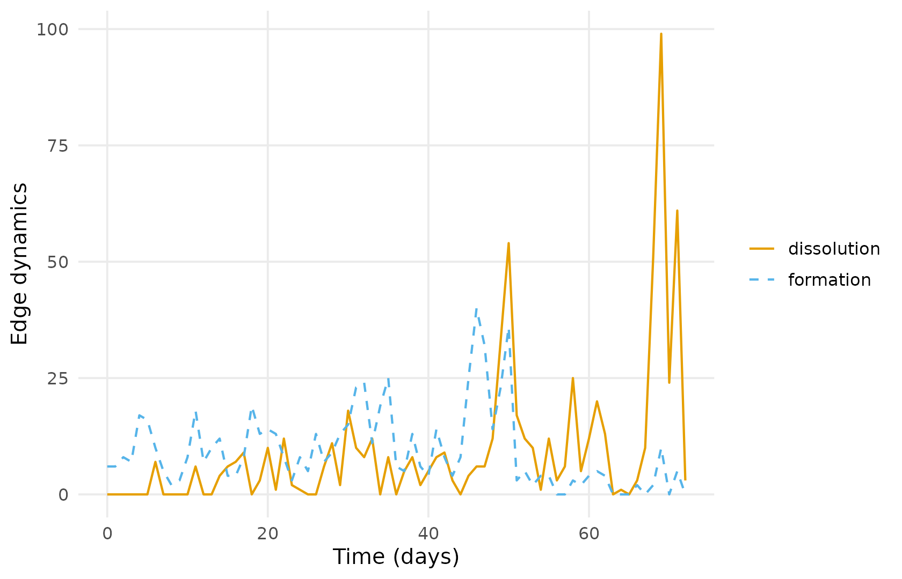
Proximity timeline.
plot(dn, type = "proximity", slices = 20)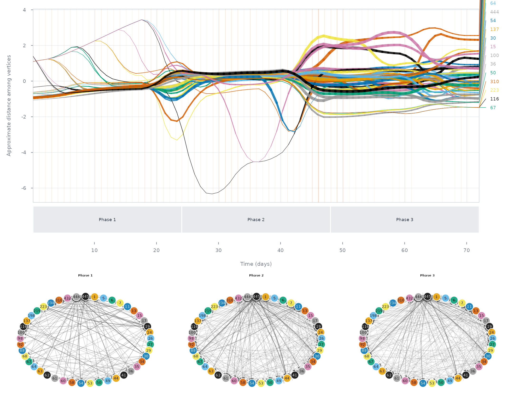
5. Graph-level measures
A seven-day rolling density.
weekly_density <- metrics(dn, measure = "density", start = 14, end = 60, step = 1, window = 7)
plot(weekly_density)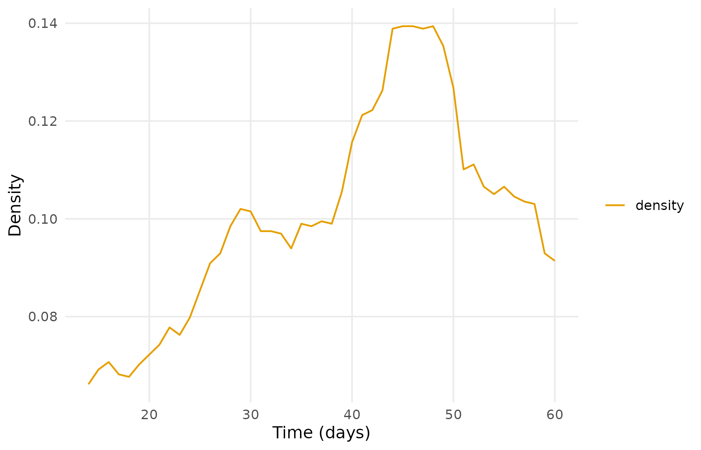
Density over the whole period, and the time-integrated density.
metrics(dn, measure = c("density", "temporal_density", "edges"), window = "all")
#> # Graph structure (graph-level)
#> # 1 time points, 71.89722 per bin | time in days
#> # measures: density, temporal_density, edges
#> time measure value
#> 0.1138889 density 0.21616162
#> 0.1138889 temporal_density 0.06348315
#> 0.1138889 edges 428.00000000Reciprocity, on the full network as in the chapter.
reciprocity <- metrics(dn_full, measure = "reciprocity",
start = 1, end = 73, step = 1, window = 1)
plot(reciprocity)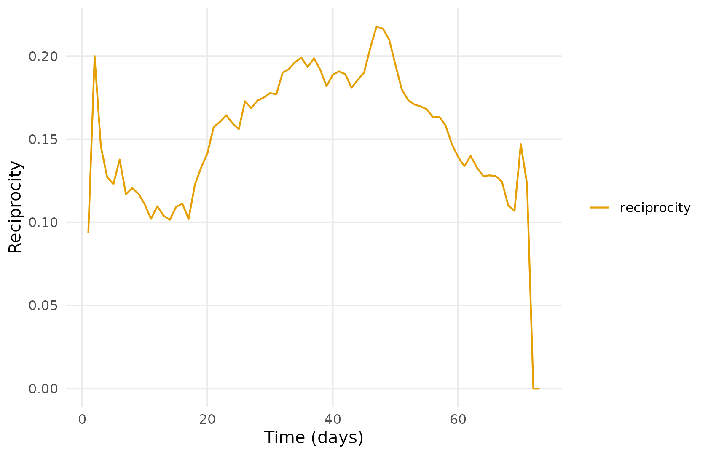
The dyad census. window = 0 samples at each instant,
which is what tSnaStats() does by default.
dyad_census <- metrics(dn, measure = c("mutual", "asymmetric", "null"),
start = 0, end = 72, step = 1, window = 0)
plot(dyad_census)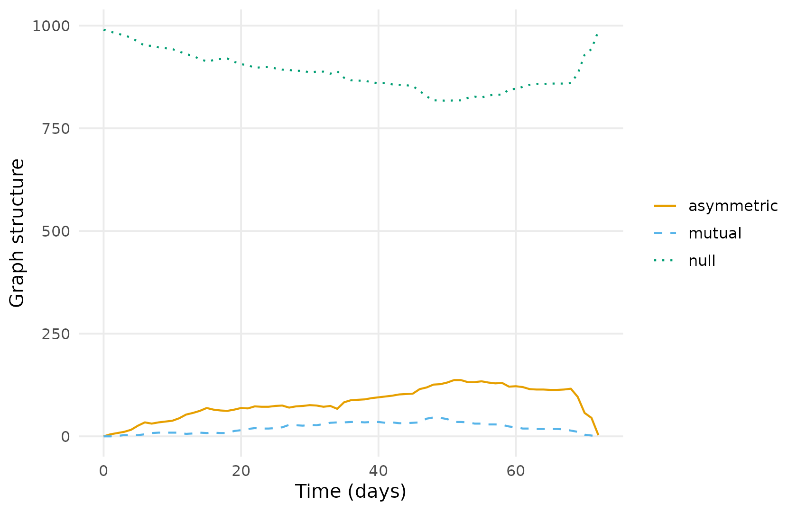
Degree centralization.
centralization <- metrics(dn, measure = "centralization_degree",
start = 1, end = 73, step = 1, window = 1)
plot(centralization)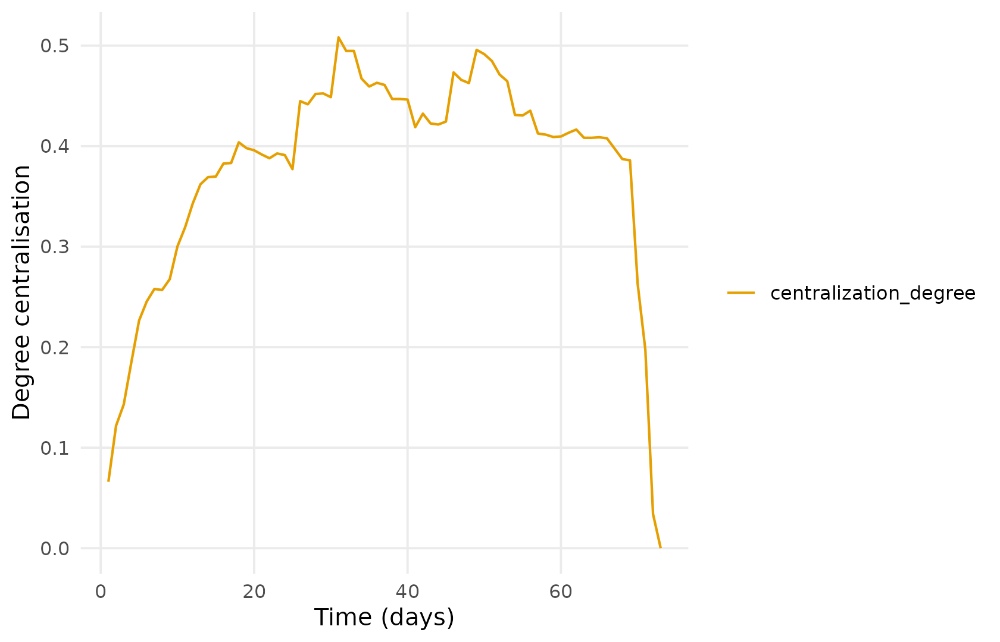
6. Node-level measures
Degree, in-degree and out-degree in one call.
degree_series <- dyn_centrality(dn, measure = "degree",
mode = c("all", "in", "out"),
start = 1, end = 73, step = 1, window = 1)
summary(degree_series)
#> node measure n mean sd min max peak_time
#> 1 1 degree 73 8.39726027 3.6732506 0 14 41
#> 2 1 degree_in 73 3.08219178 1.5069600 0 7 41
#> 3 1 degree_out 73 5.31506849 2.4713734 0 10 48
#> 4 100 degree 73 6.57534247 3.3949219 0 9 35
#> 5 100 degree_in 73 4.91780822 2.7220980 0 7 35
#> 6 100 degree_out 73 1.65753425 1.0030395 0 4 14
#> 7 11 degree 73 11.72602740 7.6779994 0 26 47
#> 8 11 degree_in 73 5.50684932 4.5768842 0 13 60
#> 9 11 degree_out 73 6.21917808 3.5716732 0 15 49
#> 10 116 degree 73 1.50684932 1.7726572 0 9 15
#> 11 116 degree_in 73 0.67123288 1.7244548 0 8 15
#> 12 116 degree_out 73 0.83561644 0.3731882 0 1 10
#> 13 13 degree 73 2.39726027 3.3530240 0 12 50
#> 14 13 degree_in 73 0.87671233 0.9566319 0 3 69
#> 15 13 degree_out 73 1.52054795 2.5986620 0 10 50
#> 16 137 degree 73 3.82191781 2.9455355 0 13 49
#> 17 137 degree_in 73 2.00000000 1.8333333 0 9 49
#> 18 137 degree_out 73 1.82191781 1.2946736 0 4 42
#> 19 15 degree 73 4.69863014 2.0995035 0 10 48
#> 20 15 degree_in 73 1.57534247 0.8150973 0 4 48
#> 21 15 degree_out 73 3.12328767 1.4136753 0 7 58
#> 22 17 degree 73 2.45205479 1.1431085 0 6 69
#> 23 17 degree_in 73 0.09589041 0.2964786 0 1 17
#> 24 17 degree_out 73 2.35616438 1.0848690 0 6 69
#> 25 19 degree 73 9.87671233 3.7894048 0 15 51
#> 26 19 degree_in 73 5.05479452 2.3681358 0 8 51
#> 27 19 degree_out 73 4.82191781 1.6015831 0 7 48
#> 28 198 degree 73 4.73972603 3.1092487 0 11 50
#> 29 198 degree_in 73 2.82191781 2.1943264 0 8 58
#> 30 198 degree_out 73 1.91780822 1.3617128 0 5 40
#> 31 219 degree 73 3.80821918 1.5956324 0 6 50
#> 32 219 degree_in 73 1.91780822 1.3819614 0 4 50
#> 33 219 degree_out 73 1.89041096 0.4583074 0 2 1
#> 34 223 degree 73 3.89041096 1.9759783 0 8 20
#> 35 223 degree_in 73 1.30136986 1.4012389 0 4 11
#> 36 223 degree_out 73 2.58904110 1.0908154 0 4 20
#> 37 234 degree 73 1.89041096 2.2642244 0 6 33
#> 38 234 degree_in 73 1.89041096 2.2642244 0 6 33
#> 39 234 degree_out 73 0.00000000 0.0000000 0 0 1
#> 40 24 degree 73 6.36986301 4.9986299 0 16 47
#> 41 24 degree_in 73 1.97260274 2.5710601 0 9 50
#> 42 24 degree_out 73 4.39726027 2.8951095 0 9 38
#> 43 26 degree 73 3.73972603 4.1734192 0 12 49
#> 44 26 degree_in 73 1.87671233 2.3448834 0 7 49
#> 45 26 degree_out 73 1.86301370 2.0091117 0 5 35
#> 46 27 degree 73 2.61643836 1.8305292 0 6 27
#> 47 27 degree_in 73 0.95890411 1.5132595 0 5 58
#> 48 27 degree_out 73 1.65753425 0.9161995 0 4 66
#> 49 29 degree 73 3.91780822 3.0810957 0 10 47
#> 50 29 degree_in 73 0.89041096 0.9938931 0 4 31
#> 51 29 degree_out 73 3.02739726 2.4150719 0 8 47
#> 52 30 degree 73 8.12328767 3.2742480 0 14 46
#> 53 30 degree_in 73 3.13698630 1.8952797 0 7 46
#> 54 30 degree_out 73 4.98630137 1.5942009 0 7 6
#> 55 310 degree 73 1.78082192 1.5022814 0 5 4
#> 56 310 degree_in 73 0.84931507 1.4402086 0 4 4
#> 57 310 degree_out 73 0.93150685 0.2543383 0 1 1
#> 58 34 degree 73 3.97260274 3.2530866 0 14 50
#> 59 34 degree_in 73 1.32876712 1.5005073 0 6 50
#> 60 34 degree_out 73 2.64383562 2.2630477 0 8 49
#> 61 35 degree 73 4.83561644 2.8964236 0 12 48
#> 62 35 degree_in 73 1.93150685 1.6101136 0 6 48
#> 63 35 degree_out 73 2.90410959 1.3860855 0 6 48
#> 64 36 degree 73 5.23287671 2.2330880 0 9 13
#> 65 36 degree_in 73 1.38356164 1.2091105 0 5 22
#> 66 36 degree_out 73 3.84931507 1.5426459 0 5 13
#> 67 41 degree 73 5.27397260 4.9223421 0 13 50
#> 68 41 degree_in 73 4.15068493 3.9884250 0 11 50
#> 69 41 degree_out 73 1.12328767 0.9992387 0 2 29
#> 70 432 degree 73 3.61643836 4.0982047 0 11 46
#> 71 432 degree_in 73 0.83561644 1.1427756 0 3 46
#> 72 432 degree_out 73 2.78082192 3.0333634 0 8 45
#> 73 44 degree 73 11.61643836 6.1703371 0 25 50
#> 74 44 degree_in 73 4.41095890 3.5230811 0 12 50
#> 75 44 degree_out 73 7.20547945 3.4679441 0 14 46
#> 76 444 degree 73 37.58904110 11.7813832 0 52 49
#> 77 444 degree_in 73 27.90410959 8.0141617 0 35 50
#> 78 444 degree_out 73 9.68493151 4.8501910 0 19 31
#> 79 445 degree 73 22.94520548 12.0909636 0 37 50
#> 80 445 degree_in 73 19.61643836 10.4318291 0 31 50
#> 81 445 degree_out 73 3.32876712 1.8488344 0 6 46
#> 82 49 degree 73 4.47945205 3.0005073 0 9 38
#> 83 49 degree_in 73 1.64383562 1.5126307 0 5 41
#> 84 49 degree_out 73 2.83561644 1.6584271 0 6 49
#> 85 5 degree 73 3.26027397 2.4722201 0 7 59
#> 86 5 degree_in 73 1.72602740 1.9878819 0 5 59
#> 87 5 degree_out 73 1.53424658 0.7280528 0 4 30
#> 88 50 degree 73 3.60273973 2.6391272 0 10 41
#> 89 50 degree_in 73 0.83561644 1.1305566 0 3 35
#> 90 50 degree_out 73 2.76712329 1.9827068 0 7 41
#> 91 53 degree 73 2.19178082 2.6281464 0 12 50
#> 92 53 degree_in 73 1.04109589 1.1718736 0 7 50
#> 93 53 degree_out 73 1.15068493 1.6130650 0 6 46
#> 94 54 degree 73 5.52054795 2.1991765 0 9 49
#> 95 54 degree_in 73 2.42465753 1.5978963 0 4 30
#> 96 54 degree_out 73 3.09589041 1.0160433 0 5 49
#> 97 58 degree 73 4.08219178 2.6497035 0 10 28
#> 98 58 degree_in 73 1.23287671 1.1489192 0 5 28
#> 99 58 degree_out 73 2.84931507 1.7533399 0 5 22
#> 100 6 degree 73 4.36986301 3.8748005 0 10 49
#> 101 6 degree_in 73 1.30136986 1.8157102 0 4 49
#> 102 6 degree_out 73 3.06849315 2.4851155 0 7 35
#> 103 60 degree 73 7.71232877 5.0290253 0 21 49
#> 104 60 degree_in 73 1.69863014 2.0390966 0 8 49
#> 105 60 degree_out 73 6.01369863 3.4257730 0 13 47
#> 106 61 degree 73 4.43835616 2.9106428 0 12 49
#> 107 61 degree_in 73 1.41095890 1.4223964 0 5 45
#> 108 61 degree_out 73 3.02739726 1.8406868 0 7 47
#> 109 62 degree 73 2.79452055 4.1364199 0 11 62
#> 110 62 degree_in 73 1.06849315 1.9953332 0 6 62
#> 111 62 degree_out 73 1.72602740 2.4167257 0 9 50
#> 112 63 degree 73 3.31506849 2.1400721 0 9 52
#> 113 63 degree_in 73 0.50684932 0.8838566 0 3 41
#> 114 63 degree_out 73 2.80821918 1.5244082 0 7 52
#> 115 64 degree 73 2.82191781 1.7106080 0 7 24
#> 116 64 degree_in 73 1.26027397 1.0277726 0 3 24
#> 117 64 degree_out 73 1.56164384 0.9277557 0 4 24
#> 118 67 degree 73 2.27397260 2.6784131 0 9 21
#> 119 67 degree_in 73 1.21917808 2.4565478 0 8 30
#> 120 67 degree_out 73 1.05479452 0.7243850 0 2 17
#> 121 68 degree 73 5.87671233 3.7525740 0 15 46
#> 122 68 degree_in 73 2.23287671 1.4674292 0 6 48
#> 123 68 degree_out 73 3.64383562 2.4572447 0 11 46
#> 124 7 degree 73 5.86301370 4.3182914 0 17 47
#> 125 7 degree_in 73 1.93150685 2.0838584 0 9 49
#> 126 7 degree_out 73 3.93150685 2.5891267 0 10 45
#> 127 88 degree 73 3.23287671 2.0311501 0 7 48
#> 128 88 degree_in 73 1.01369863 1.3175435 0 5 48
#> 129 88 degree_out 73 2.21917808 1.2275379 0 4 50
#> 130 92 degree 73 3.67123288 2.1347313 0 8 60
#> 131 92 degree_in 73 2.04109589 1.7984434 0 6 62
#> 132 92 degree_out 73 1.63013699 0.9355160 0 3 18
#> 133 98 degree 73 2.53424658 3.3211535 0 10 54
#> 134 98 degree_in 73 2.17808219 2.8005082 0 7 54
#> 135 98 degree_out 73 0.35616438 0.8227640 0 3 54
degree <- dyn_centrality(dn, measure = "degree", start = 1, end = 73,
step = 1, window = 1)
plot(degree)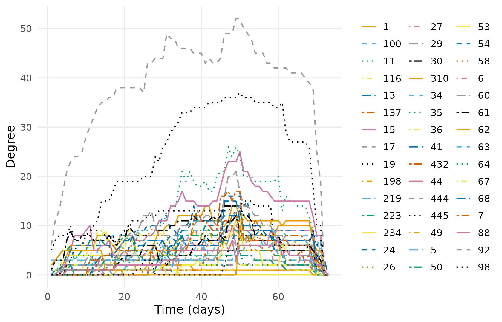
Closeness, betweenness and eigenvector.
other_centrality <- dyn_centrality(dn, measure = c("closeness", "betweenness", "eigenvector"),
start = 1, end = 73, step = 1, window = 1)
summary(other_centrality)
#> node measure n mean sd min max peak_time
#> 1 1 betweenness 73 96.91938330 69.33642795 0 298.7333333 19
#> 2 1 closeness 73 0.48490309 0.13635671 0 0.5774648 48
#> 3 1 eigenvector 73 0.31610043 0.11954994 0 0.4825081 48
#> 4 100 betweenness 73 7.94096740 17.30686617 0 73.6666667 16
#> 5 100 closeness 73 0.42239989 0.20768862 0 0.5479452 39
#> 6 100 eigenvector 73 0.29449965 0.14865458 0 0.4537850 70
#> 7 11 betweenness 73 97.07955095 74.79012702 0 234.6880952 44
#> 8 11 closeness 73 0.51016959 0.15221433 0 0.6515152 50
#> 9 11 eigenvector 73 0.38181011 0.18416367 0 0.6651413 49
#> 10 116 betweenness 73 0.74657534 2.41971544 0 15.0000000 15
#> 11 116 closeness 73 0.41821632 0.12988210 0 0.5441176 15
#> 12 116 eigenvector 73 0.11846432 0.09976393 0 0.4662058 15
#> 13 13 betweenness 73 9.96422673 18.31491276 0 58.6666667 69
#> 14 13 closeness 73 0.29565144 0.33873489 0 1.0000000 18
#> 15 13 eigenvector 73 0.08043078 0.14962646 0 1.0000000 72
#> 16 137 betweenness 73 16.32489945 24.17644597 0 71.0000000 37
#> 17 137 closeness 73 0.40139578 0.19834649 0 0.5694444 49
#> 18 137 eigenvector 73 0.17491742 0.11035562 0 0.4581681 49
#> 19 15 betweenness 73 4.55420159 11.24714793 0 89.6222222 59
#> 20 15 closeness 73 0.48002067 0.10515892 0 0.5540541 48
#> 21 15 eigenvector 73 0.28653931 0.07399211 0 0.4158732 58
#> 22 17 betweenness 73 1.76484018 6.50568576 0 45.3333333 23
#> 23 17 closeness 73 0.45258489 0.13086774 0 0.6666667 5
#> 24 17 eigenvector 73 0.19367601 0.09077682 0 0.5773503 72
#> 25 19 betweenness 73 77.51883279 55.93166969 0 234.4021978 54
#> 26 19 closeness 73 0.51412061 0.10026288 0 0.7500000 1
#> 27 19 eigenvector 73 0.36314964 0.13628720 0 0.8517952 1
#> 28 198 betweenness 73 15.66641133 19.02485546 0 60.9028563 50
#> 29 198 closeness 73 0.43535925 0.14018242 0 0.5584416 50
#> 30 198 eigenvector 73 0.21579519 0.11455919 0 0.4476033 71
#> 31 219 betweenness 73 2.40793561 3.56870762 0 12.1221989 57
#> 32 219 closeness 73 0.45689619 0.11397598 0 0.6000000 1
#> 33 219 eigenvector 73 0.18219026 0.08455548 0 0.5773503 1
#> 34 223 betweenness 73 4.98516179 10.42443510 0 58.7333333 20
#> 35 223 closeness 73 0.46998480 0.11719128 0 0.6000000 1
#> 36 223 eigenvector 73 0.26546167 0.13966398 0 0.6662759 3
#> 37 234 betweenness 73 0.00000000 0.00000000 0 0.0000000 1
#> 38 234 closeness 73 0.21475260 0.24517824 0 0.5294118 2
#> 39 234 eigenvector 73 0.09892679 0.11435861 0 0.2906634 5
#> 40 24 betweenness 73 13.15650951 18.81084139 0 98.4464986 52
#> 41 24 closeness 73 0.42228913 0.20064343 0 0.5810811 50
#> 42 24 eigenvector 73 0.25923676 0.15680085 0 0.5159381 38
#> 43 26 betweenness 73 16.90805407 28.10019647 0 77.9023810 41
#> 44 26 closeness 73 0.29352371 0.22820204 0 0.5694444 49
#> 45 26 eigenvector 73 0.11836505 0.12536672 0 0.4106377 49
#> 46 27 betweenness 73 3.29836633 7.80128892 0 45.1261905 55
#> 47 27 closeness 73 0.43901737 0.13409775 0 0.5180723 55
#> 48 27 eigenvector 73 0.15158348 0.06617717 0 0.2641248 27
#> 49 29 betweenness 73 11.26374869 18.63465776 0 74.5000000 30
#> 50 29 closeness 73 0.46015808 0.24473770 0 1.0000000 18
#> 51 29 eigenvector 73 0.14465612 0.11242667 0 0.3717904 49
#> 52 30 betweenness 73 26.62973865 25.68313182 0 161.3333333 21
#> 53 30 closeness 73 0.50580320 0.09051292 0 0.6000000 2
#> 54 30 eigenvector 73 0.34915769 0.11695371 0 0.6102290 2
#> 55 310 betweenness 73 1.94520548 4.85023027 0 18.0000000 14
#> 56 310 closeness 73 0.44029241 0.12296748 0 0.6000000 1
#> 57 310 eigenvector 73 0.14713145 0.12123738 0 0.5773503 1
#> 58 34 betweenness 73 9.54125926 15.37264679 0 55.1250788 50
#> 59 34 closeness 73 0.33224519 0.17736873 0 0.5128205 40
#> 60 34 eigenvector 73 0.12018815 0.08547113 0 0.3075382 50
#> 61 35 betweenness 73 18.56748607 28.04834645 0 100.1998168 48
#> 62 35 closeness 73 0.43289895 0.14060627 0 0.5394737 48
#> 63 35 eigenvector 73 0.17970718 0.07904621 0 0.3241561 48
#> 64 36 betweenness 73 13.64890787 20.62112201 0 62.0734848 36
#> 65 36 closeness 73 0.45460376 0.13254436 0 0.5441176 15
#> 66 36 eigenvector 73 0.25945738 0.09950851 0 0.4759273 15
#> 67 41 betweenness 73 14.64250454 16.45010427 0 52.8000000 68
#> 68 41 closeness 73 0.25417404 0.22165067 0 0.5058824 50
#> 69 41 eigenvector 73 0.14385070 0.14030869 0 0.3543881 47
#> 70 432 betweenness 73 34.85458355 51.94780990 0 162.5531136 54
#> 71 432 closeness 73 0.26212059 0.21418470 0 0.5180723 54
#> 72 432 eigenvector 73 0.09955532 0.11176956 0 0.3126517 47
#> 73 44 betweenness 73 112.25053815 115.16809150 0 362.0257703 56
#> 74 44 closeness 73 0.51667536 0.13266922 0 0.6417910 50
#> 75 44 eigenvector 73 0.43538452 0.14502478 0 0.6798242 48
#> 76 444 betweenness 73 556.92470949 259.89038393 0 974.0571429 31
#> 77 444 closeness 73 0.81012598 0.14727103 0 1.0000000 1
#> 78 444 eigenvector 73 0.97260274 0.16436771 0 1.0000000 1
#> 79 445 betweenness 73 129.38475856 78.52459941 0 270.8285714 59
#> 80 445 closeness 73 0.62727721 0.22066617 0 1.0000000 5
#> 81 445 eigenvector 73 0.70779310 0.30164794 0 0.9830725 42
#> 82 49 betweenness 73 15.21886839 26.78797987 0 91.7754329 62
#> 83 49 closeness 73 0.46135099 0.13127673 0 0.5540541 49
#> 84 49 eigenvector 73 0.23564992 0.11145280 0 0.4483502 41
#> 85 5 betweenness 73 1.15387696 2.56946750 0 13.8333333 70
#> 86 5 closeness 73 0.45157199 0.14042048 0 0.5375000 59
#> 87 5 eigenvector 73 0.20327821 0.10411011 0 0.5768775 71
#> 88 50 betweenness 73 6.99542984 10.02296375 0 32.9928571 37
#> 89 50 closeness 73 0.40744581 0.19459772 0 0.5555556 41
#> 90 50 eigenvector 73 0.19965756 0.11531811 0 0.4022259 41
#> 91 53 betweenness 73 9.10275460 16.71896509 0 76.5242424 62
#> 92 53 closeness 73 0.24496131 0.18343933 0 0.5180723 50
#> 93 53 eigenvector 73 0.04738179 0.07204915 0 0.2916880 50
#> 94 54 betweenness 73 39.85400453 28.90149372 0 124.1500000 59
#> 95 54 closeness 73 0.48236616 0.10583613 0 0.5540541 49
#> 96 54 eigenvector 73 0.28013424 0.07758426 0 0.4367380 9
#> 97 58 betweenness 73 24.51697173 21.84378144 0 80.6666667 23
#> 98 58 closeness 73 0.39601122 0.20320421 0 0.5466667 46
#> 99 58 eigenvector 73 0.19410551 0.10908136 0 0.3372337 27
#> 100 6 betweenness 73 11.55659268 18.81302646 0 50.2000000 57
#> 101 6 closeness 73 0.36952466 0.21486681 0 0.5616438 49
#> 102 6 eigenvector 73 0.19987806 0.17406001 0 0.4143465 47
#> 103 60 betweenness 73 31.58092775 38.34611569 0 144.9992063 27
#> 104 60 closeness 73 0.47560298 0.15895486 0 0.6666667 5
#> 105 60 eigenvector 73 0.32595661 0.14897207 0 0.5919692 49
#> 106 61 betweenness 73 6.65071604 8.73009757 0 35.8428571 68
#> 107 61 closeness 73 0.46677297 0.13182005 0 0.5540541 47
#> 108 61 eigenvector 73 0.26302613 0.10171191 0 0.4074832 45
#> 109 62 betweenness 73 16.38315079 33.23762156 0 111.4178571 61
#> 110 62 closeness 73 0.24077701 0.29919602 0 1.0000000 11
#> 111 62 eigenvector 73 0.12746990 0.19043517 0 0.5773503 72
#> 112 63 betweenness 73 6.13022411 19.12423090 0 113.1055556 59
#> 113 63 closeness 73 0.45370750 0.13916220 0 0.5443038 52
#> 114 63 eigenvector 73 0.22315901 0.07357178 0 0.3427619 41
#> 115 64 betweenness 73 3.12314698 6.26018893 0 29.3000000 23
#> 116 64 closeness 73 0.45236269 0.11166410 0 0.5454545 1
#> 117 64 eigenvector 73 0.15688217 0.06825338 0 0.3117787 1
#> 118 67 betweenness 73 6.56344166 14.94437172 0 81.6333333 23
#> 119 67 closeness 73 0.39100769 0.22137505 0 1.0000000 11
#> 120 67 eigenvector 73 0.12694611 0.10611194 0 0.3524230 30
#> 121 68 betweenness 73 32.99128998 32.34537632 0 147.3448052 46
#> 122 68 closeness 73 0.42854542 0.20267420 0 0.5942029 46
#> 123 68 eigenvector 73 0.22857390 0.12820812 0 0.5211194 48
#> 124 7 betweenness 73 18.71532495 17.41859639 0 74.2376124 45
#> 125 7 closeness 73 0.43035201 0.19448041 0 0.5942029 49
#> 126 7 eigenvector 73 0.26277112 0.14175728 0 0.5654737 45
#> 127 88 betweenness 73 11.28800430 21.72017895 0 85.3888889 51
#> 128 88 closeness 73 0.45962093 0.12971592 0 0.6000000 72
#> 129 88 eigenvector 73 0.22006958 0.08646639 0 0.5773503 72
#> 130 92 betweenness 73 11.90129022 20.74690873 0 116.3666667 60
#> 131 92 closeness 73 0.39401505 0.13452579 0 0.5466667 47
#> 132 92 eigenvector 73 0.14255324 0.11237722 0 0.4137454 62
#> 133 98 betweenness 73 3.11065520 13.66000847 0 102.9285714 69
#> 134 98 closeness 73 0.18283387 0.21653820 0 0.5250000 69
#> 135 98 eigenvector 73 0.08580220 0.11434280 0 0.4122499 71
betweenness <- dyn_centrality(dn, measure = "betweenness",
start = 1, end = 73, step = 1, window = 1)
plot(betweenness)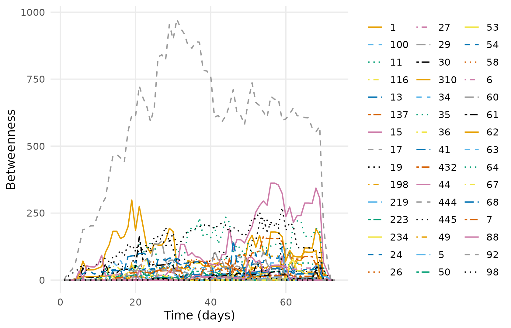
Aggregate centrality sits on the vertex table, so it can be read or filtered without a second call.
head(as.data.frame(dn, what = "nodes",
measure = c("degree", "betweenness", "eigenvector")))
#> name Facilitator role1 experience experience2 grades location
#> 1 1 0 libmedia 1 6 to 10 secondary VA
#> 2 5 0 otheredprof 3 20+ generalist AL
#> 3 6 0 classteaching 1 4 to 5 generalist AL
#> 4 7 0 instructionaltech 2 11 to 20 generalist SD
#> 5 11 0 other 3 20+ generalist KG
#> 6 13 0 classteaching 2 11 to 20 middle CA
#> region country group gender expert connect expert_level degree
#> 1 South US UZ female 0 1 Expert 20
#> 2 South US AC female 0 0 Teacher 10
#> 3 South US AC female 0 1 Expert 13
#> 4 Midwest US OT female 0 0 Student 26
#> 5 International KG DL female 0 1 Teacher 47
#> 6 West US AC female 0 0 Student 15
#> betweenness eigenvector
#> 1 37.308745 0.4188396
#> 2 4.222691 0.3152262
#> 3 4.759524 0.3337165
#> 4 34.113923 0.5748078
#> 5 180.530502 0.8963590
#> 6 16.629447 0.40510507. Reachability
The chapter seeds on the 44th vertex of its induced subgraph, which is participant 444. Dynet addresses vertices by name.
fwd <- paths(dn, from = "444", direction = "forward")
fwd
#> # Time-respecting paths from '444', from t = 0.1138889
#> # reaches 44 of 44 other vertices | time in days
#> node reachable arrival_time attained latency n_hops n_paths
#> 1 TRUE 5.484028 TRUE 5.370139 2 1
#> 5 TRUE 33.213194 TRUE 33.099306 2 1
#> 6 TRUE 37.055556 TRUE 36.941667 2 1
#> 7 TRUE 11.863889 TRUE 11.750000 3 1
#> 11 TRUE 12.383333 TRUE 12.269444 1 1
#> 13 TRUE 26.195139 TRUE 26.081250 2 1
#> 15 TRUE 6.135417 TRUE 6.021528 5 1
#> 17 TRUE 20.250694 TRUE 20.136806 4 3
#> 19 TRUE 2.222222 TRUE 2.108333 1 1
#> 24 TRUE 21.067361 TRUE 20.953472 2 1
#> 26 TRUE 25.313889 TRUE 25.200000 2 1
#> 27 TRUE 21.071528 TRUE 20.957639 3 1
#> # 33 more rows. summary() aggregates them; plot() draws the tree.
plot(fwd)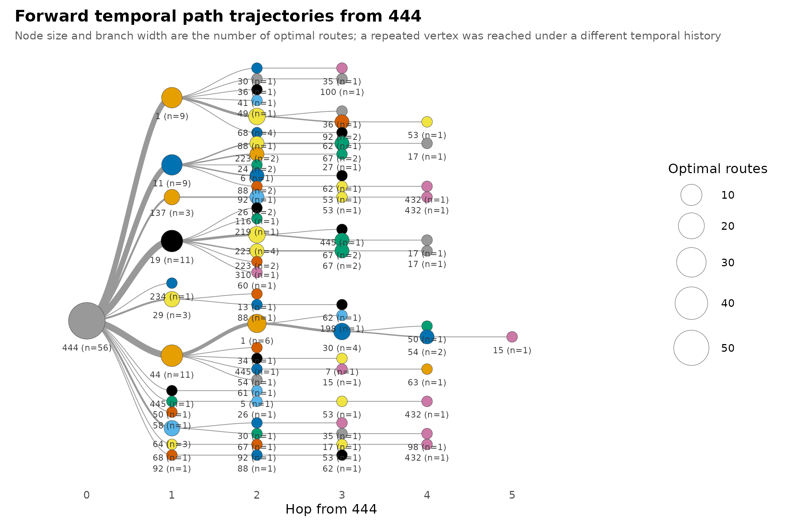
The chapter’s transmissionTimeline() becomes a
trajectory tree, which carries route counts and branching probabilities
the original does not.
plot_path_trajectories(path_trajectories(fwd), measure = "time")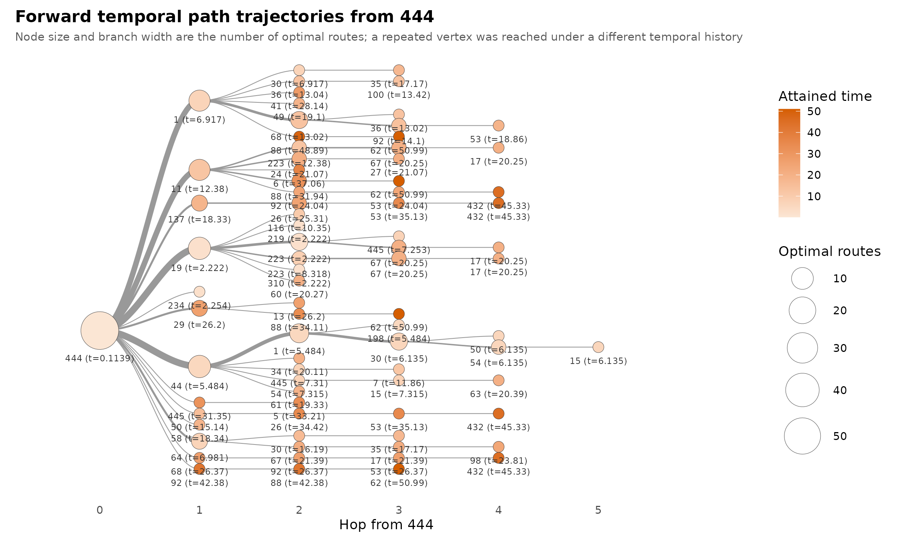
8. Mixing between expertise levels
mix <- mixing(dn, attribute = "expert_level",
start = 1, end = 73, step = 1, window = 1)
summary(mix)
#> measure n mean sd min max peak_time
#> 1 Expert -> Expert 73 2.890411 3.138301 0 8 54
#> 2 Expert -> Student 73 5.849315 3.703119 0 14 50
#> 3 Expert -> Teacher 73 14.315068 6.220211 0 24 55
#> 4 Student -> Expert 73 4.315068 3.620454 0 12 50
#> 5 Student -> Student 73 10.000000 4.725816 0 22 50
#> 6 Student -> Teacher 73 33.493151 14.732922 0 56 50
#> 7 Teacher -> Expert 73 5.808219 3.984893 0 14 48
#> 8 Teacher -> Student 73 16.232877 8.280701 0 35 47
#> 9 Teacher -> Teacher 73 36.821918 15.738614 0 67 49
plot(mix)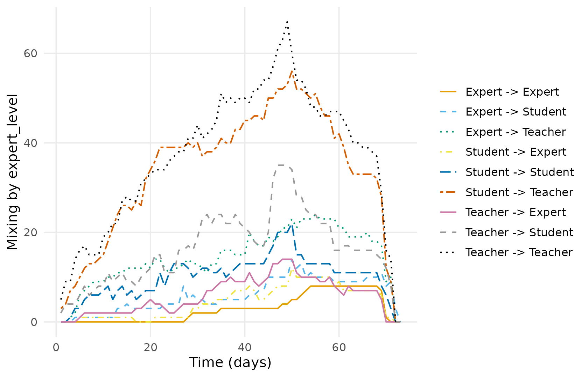
nodemix drops one cell as the ergm base
category, so the chapter plots eight of the nine group pairs.
mixing() reports all nine.
What differs
Two differences from the published figures, both deliberate.
The spell rule. The chapter sets every tie in a
discussion to start at the discussion’s first post. Saqr and
Nouri (2020), which thread = implements, starts each tie at
its own post. Only 302 of the surviving posts are opening
posts, so the chapter’s spells are about a quarter longer on average,
and its time-integrated density is correspondingly higher.
29 ties that never happened. The chapter builds its
static edge list before dropping single-post discussions, so 29 pairs
enter the network with no activity at all. networkDynamic()
then gives each of them activity across the entire observation window,
flagged censored at both ends — permanently-on ties that no message ever
created. Five of them fall inside the active subnetwork, which is why
the chapter reports 433 ties where this reports 428, and why its day-73
statistics are non-empty for a day past the end of observation.
Do the two implementations agree?
The differences above are definitional, not numerical. Given the
same network, Dynet and tsna/sna
return the same values. The check below rebuilds the chapter’s own
construction and compares; the bracket indexing is there because
tsna returns mts matrices.
library(tsna); library(networkDynamic); library(sna)
chapter_spells <- posts |>
mutate(day = round(as.numeric(difftime(
lubridate::parse_date_time(timestamp, "mdy HM"),
min(lubridate::parse_date_time(timestamp, "mdy HM")), units = "days")), 2)) |>
group_by(discussion_title) |>
mutate(onset = min(day), terminus = max(day)) |>
ungroup()
nd <- networkDynamic(edge.spells = data.frame(
onset = chapter_spells$onset, terminus = chapter_spells$terminus,
tail = as.integer(chapter_spells$sender),
head = as.integer(chapter_spells$receiver)))
#> Initializing base.net of size 445 imputed from maximum vertex id in edge records
#> Created net.obs.period to describe network
#> Network observation period info:
#> Number of observation spells: 1
#> Maximal time range observed: 0 until 72.01
#> Temporal mode: continuous
#> Time unit: unknown
#> Suggested time increment: NA
same <- dynet(data.frame(from = chapter_spells$sender, to = chapter_spells$receiver,
start = chapter_spells$onset, end = chapter_spells$terminus),
directed = TRUE, loops = FALSE)
active_nd <- get.inducedSubgraph(nd, v = which(sna::degree(nd) > 20))
active_dn <- induce_subgraph(same, degree > 20)
active_density <- metrics(active_dn, "density", window = "all")
active_density_table <- as.data.frame(active_density)
density_diff <- abs(active_density_table$value - gden(active_nd))
active_mutual <- metrics(active_dn, "mutual", start = 1, end = 73,
step = 1, window = 1)
active_mutual_table <- as.data.frame(active_mutual)
tsna_mutual <- tSnaStats(active_nd, "mutuality", start = 1, end = 73,
time.interval = 1, aggregate.dur = 1)
mutual_diff <- max(abs(active_mutual_table$value - as.numeric(tsna_mutual)))
ref <- tSnaStats(active_nd, "degree", start = 1, end = 73,
time.interval = 1, aggregate.dur = 1, cmode = "freeman")
active_degree <- dyn_centrality(active_dn, "degree", start = 1,
end = 73, step = 1, window = 1)
got <- as.data.frame(active_degree)
m <- matrix(NA_real_, 73, ncol(ref), dimnames = list(NULL, colnames(ref)))
m[cbind(match(got$time, sort(unique(got$time))),
match(got$node, colnames(ref)))] <- got$value
degree_diff <- max(abs(m[seq_len(72), ] - as.matrix(ref)[seq_len(72), ]))
tp <- tPath(active_nd, v = 44, direction = "fwd")
active_paths <- paths(active_dn, from = "444")
dp <- as.data.frame(active_paths)
a <- setNames(tp$tdist, as.character(network.vertex.names(active_nd)))
b <- setNames(dp$latency, dp$node)[names(a)]
ok <- is.finite(a) & is.finite(b)
arrival_diff <- max(abs(a[ok] - b[ok]))
data.frame(
quantity = c("aggregate density", "mutual dyads per day",
"degree per node per day", "earliest arrival time"),
max_abs_diff = c(density_diff, mutual_diff, degree_diff, arrival_diff))
#> quantity max_abs_diff
#> 1 aggregate density 0
#> 2 mutual dyads per day 0
#> 3 degree per node per day 0
#> 4 earliest arrival time 0
sessionInfo()
#> R version 4.6.1 (2026-06-24)
#> Platform: x86_64-pc-linux-gnu
#> Running under: Ubuntu 24.04.5 LTS
#>
#> Matrix products: default
#> BLAS: /usr/lib/x86_64-linux-gnu/openblas-pthread/libblas.so.3
#> LAPACK: /usr/lib/x86_64-linux-gnu/openblas-pthread/libopenblasp-r0.3.26.so; LAPACK version 3.12.0
#>
#> locale:
#> [1] LC_CTYPE=C.UTF-8 LC_NUMERIC=C LC_TIME=C.UTF-8
#> [4] LC_COLLATE=C.UTF-8 LC_MONETARY=C.UTF-8 LC_MESSAGES=C.UTF-8
#> [7] LC_PAPER=C.UTF-8 LC_NAME=C LC_ADDRESS=C
#> [10] LC_TELEPHONE=C LC_MEASUREMENT=C.UTF-8 LC_IDENTIFICATION=C
#>
#> time zone: UTC
#> tzcode source: system (glibc)
#>
#> attached base packages:
#> [1] stats graphics grDevices utils datasets methods base
#>
#> other attached packages:
#> [1] sna_2.8 statnet.common_4.13.0 tsna_0.3.6
#> [4] networkDynamic_0.12.0 network_1.20.0 rio_1.3.0
#> [7] dplyr_1.2.1 Dynet_0.4.10
#>
#> loaded via a namespace (and not attached):
#> [1] sass_0.4.10 generics_0.1.4 stringi_1.8.9
#> [4] lattice_0.22-9 digest_0.6.39 magrittr_2.0.5
#> [7] timechange_0.4.0 evaluate_1.0.5 grid_4.6.1
#> [10] RColorBrewer_1.1-3 networkLite_1.1.0 fastmap_1.2.0
#> [13] R.oo_1.27.1 jsonlite_2.0.0 R.utils_2.13.0
#> [16] scales_1.4.0 textshaping_1.0.5 jquerylib_0.1.4
#> [19] cli_3.6.6 rlang_1.3.0 R.methodsS3_1.8.2
#> [22] withr_3.0.3 cachem_1.1.0 yaml_2.3.12
#> [25] otel_0.2.0 tools_4.6.1 coda_0.19-4.1
#> [28] ggplot2_4.0.3 curl_8.0.0 vctrs_0.7.3
#> [31] R6_2.6.1 lubridate_1.9.5 lifecycle_1.0.5
#> [34] stringr_1.6.0 snakecase_0.11.1 fs_2.1.0
#> [37] ragg_1.5.2 janitor_2.2.1 pkgconfig_2.0.3
#> [40] desc_1.4.3 pkgdown_2.2.1 pillar_1.11.1
#> [43] bslib_0.12.0 cograph_2.6.12 gtable_0.3.6
#> [46] data.table_1.18.6.1 glue_1.8.1 systemfonts_1.3.2
#> [49] xfun_0.61 tibble_3.3.1 tidyselect_1.2.1
#> [52] knitr_1.52 farver_2.1.2 htmltools_0.5.9
#> [55] igraph_2.3.3 labeling_0.4.3 rmarkdown_2.32
#> [58] compiler_4.6.1 S7_0.2.2